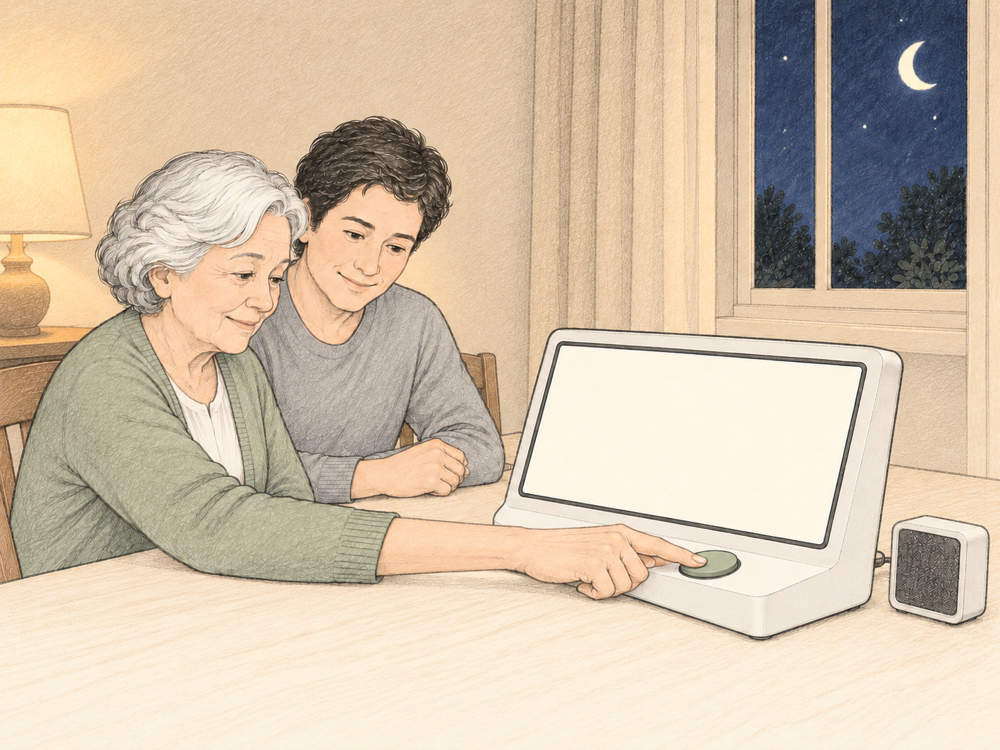
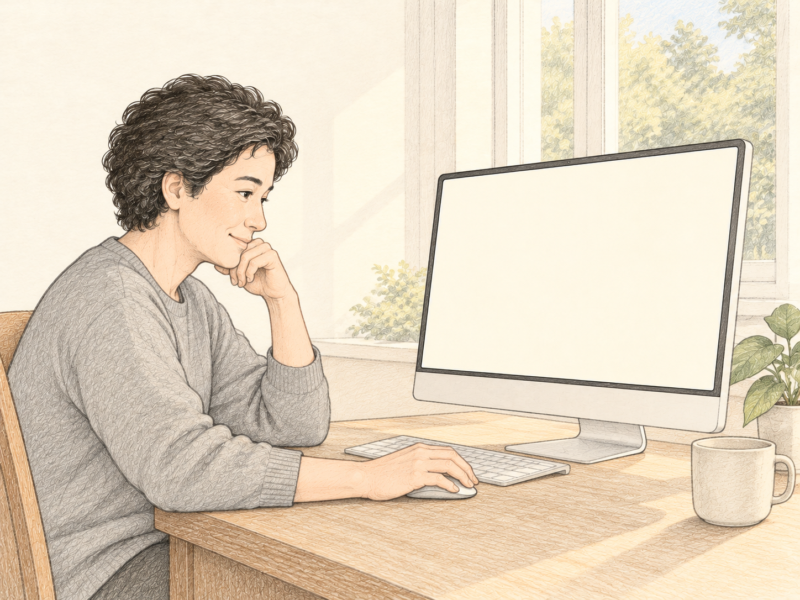

Yesterday Together: Audio Diary
Revised concept · From selection to review
Choose the day’s momentsThe caregiver selects clips and adds factual notes on a phone.Evening

02Diary received.
Preparing overnight.
04Morning review
●───○───●───●───○
Check first: knife
Morning momentApprove Edit Remove
Afternoon momentApprove Edit Remove